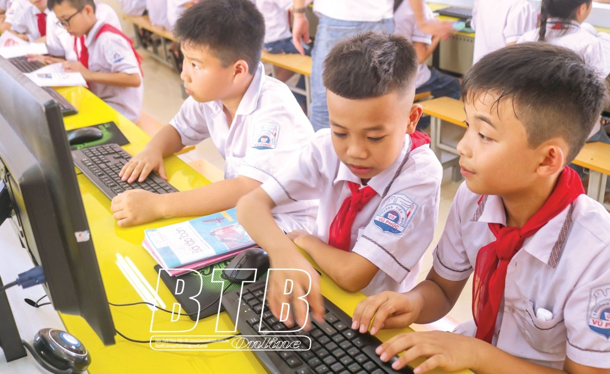

Ngành Giáo dục Thái Bình: Vượt qua khó khăn, hoàn thành xuất sắc nhiệm vụ
Năm học 2019 - 2020, trước diễn biến phức tạp của dịch Covid-19, ngành Giáo dục đã chủ động quán triệt và triển khai thực hiện nghiêm các văn bản chỉ đạo của cấp trên, tích cực tham mưu, xây dựng và tổ chức thực hiện đồng bộ các giải pháp nâng cao hiệu quả quản lý nhà nước về giáo dục và đào tạo, thực hiện thắng lợi các nhiệm vụ chính trị được giao; thi đua lập thành tích chào mừng Đại hội đại biểu Đảng bộ tỉnh lần thứ XX, nhiệm kỳ 2020 - 2025 và Đại hội đại biểu toàn quốc lần thứ XIII của Đảng.
Trước diễn biến phức tạp, khó lường của đại dịch Covid-19, với phương châm “Sức khỏe, an toàn của học sinh, giáo viên là trên hết” và “Tạm dừng đến trường, không dừng học”, Sở Giáo dục và Đào tạo đã hướng dẫn các cơ sở giáo dục điều chỉnh nội dung dạy học học kỳ II năm học 2019 - 2020; triển khai các phần mềm dạy học trực tuyến, tổ chức dạy học trên truyền hình, xây dựng kho học liệu để hướng dẫn học sinh học tập tại nhà, bảo đảm kết thúc năm học theo kế hoạch. Đã thực hiện dạy học trên truyền hình với nội dung là các chuyên đề, chủ đề ôn tập thi tuyển sinh vào lớp 10 THPT, thi tốt nghiệp THPT năm 2020 hay kiến thức bài học (tùy theo từng khối, lớp, môn, thời điểm). Tổng số tiết đã thực hiện là 224 tiết. Đồng thời, phối hợp với Sở Thông tin và Truyền thông chỉ đạo các cơ sở giáo dục xây dựng nguồn học liệu mở trên website: dayhoctructuyen.thaibinh.gov.vn với tổng số 7.537 tài liệu PDF và 3.035 video bài giảng để hỗ trợ tài liệu cho giáo viên và giúp học sinh tự học tập tại nhà. Đẩy mạnh ứng dụng công nghệ thông tin trong các hoạt động quản lý, dạy học, kiểm tra, đánh giá; xây dựng hệ thống cơ sở dữ liệu và đề án chuyển đổi số trong ngành Giáo dục.
Giáo dục mầm non tiếp tục thực hiện hiệu quả chuyên đề “Đổi mới tổ chức bữa ăn cho trẻ”, tiếp tục triển khai tốt chuyên đề “Xây dựng trường mầm non lấy trẻ làm trung tâm”, làm tốt công tác tuyên truyền, phối hợp với cha mẹ và cộng đồng trong chăm sóc, giáo dục trẻ. Một số cơ sở giáo dục mầm non đã triển khai chương trình cho trẻ mầm non làm quen với tiếng Anh thông qua các hình thức dạy học phong phú, hấp dẫn. Giáo dục phổ thông tiếp tục đổi mới phương pháp, hình thức dạy học và kiểm tra, đánh giá; chủ động xây dựng và thực hiện kế hoạch giáo dục theo định hướng phát triển phẩm chất, năng lực học sinh. Thực hiện tốt công tác giáo dục pháp luật, đạo đức, kỹ năng sống, giáo dục truyền thống, văn hóa, giáo dục chủ quyền quốc gia về biên giới biển đảo, đa dạng sinh học... Tỷ lệ học sinh học chương trình tiếng Anh hệ 10 năm tăng so với năm học trước, đặc biệt là học sinh THCS. Công tác định hướng nghề nghiệp, phân luồng học sinh sau THCS được chú trọng thực hiện. Các cơ sở giáo dục thường xuyên đã phối hợp với phòng giáo dục và đào tạo, các cơ sở đào tạo trong và ngoài tỉnh thực hiện tư vấn hướng nghiệp cho học sinh, lồng ghép các chủ đề hướng nghiệp trong chương trình giáo dục phổ thông và hoạt động tư vấn tuyển sinh.

Về kết quả giáo dục, so với năm học trước, tỷ lệ học sinh đạt hạnh kiểm tốt tăng, hạnh kiểm yếu giảm; học lực giỏi tăng, học lực yếu giảm. Tại kỳ thi học sinh giỏi quốc gia, tỉnh Thái Bình có 41 giải, trong đó có 11 giải nhì, 8 giải ba, 22 giải khuyến khích. Thi học sinh giỏi lớp 12, toàn tỉnh có 978 học sinh đạt giải, trong đó có 47 giải nhất; 201 giải nhì; 294 giải ba và 436 giải khuyến khích. Có 330 học sinh được công nhận học sinh giỏi cấp tỉnh trong kỳ thi chọn học sinh giỏi lớp 9. Tỷ lệ học sinh tốt nghiệp THPT năm 2020 đợt 1 là 99,61%; đưa Thái Bình xếp thứ 11 so với 60 tỉnh, thành phố của cả nước, có 52/52 thí sinh đỗ tốt nghiệp đợt 2. Ngoài ra, tại các cuộc thi, hội thi cấp tỉnh, cấp bộ, cấp quốc gia, học sinh, cán bộ, giáo viên của ngành Giáo dục tỉnh đã đạt nhiều thành tích cao. Công tác giáo dục thể chất, thể thao trường học được quan tâm, tích cực đổi mới nội dung, phương pháp dạy học; tăng cường các giải pháp phòng, chống tai nạn thương tích, đuối nước. Tổ chức thành công Hội khỏe Phù Đổng cấp tỉnh lần thứ X với 7 môn thi đấu.
Năm học 2020 - 2021 là năm học đầu tiên triển khai chương trình giáo dục phổ thông 2018 đối với học sinh lớp 1, đồng thời tiếp tục chương trình giáo dục phổ thông hiện hành, ngành Giáo dục đã tham mưu, chỉ đạo triển khai thực hiện chương trình giáo dục phổ thông 2018, đặc biệt là thực hiện các hệ điều kiện về đổi mới chương trình, sách giáo khoa giáo dục phổ thông mới để sẵn sàng áp dụng từ năm học 2020 - 2021 đối với lớp 1, tích cực chuẩn bị các điều kiện thực hiện chương trình giáo dục phổ thông mới đối với lớp 2 và lớp 6 năm học 2021 - 2022. Việc lựa chọn sách giáo khoa tại các cơ sở giáo dục tiểu học được thực hiện theo đúng quy định, bảo đảm công khai và minh bạch, có 5/6 bộ sách được 287 trường có cấp tiểu học lựa chọn. Sau khi các cơ sở giáo dục tiểu học lựa chọn xong sách giáo khoa, các nhà trường thực hiện niêm yết công khai danh mục sách giáo khoa lớp 1 năm học 2020 - 2021. Đồng thời thông tin rộng rãi trên các phương tiện thông tin đại chúng, thông báo cho tất cả phụ huynh có trẻ 5 tuổi sẽ vào học lớp 1 tại nhà trường trong năm học 2020 - 2021.
Trong thời gian tới, ngành Giáo dục tiếp tục triển khai quyết liệt, đồng bộ các giải pháp để hoàn thành các mục tiêu của kế hoạch năm 2021, xây dựng các chương trình hành động về phát triển giáo dục, đào tạo của tỉnh nhằm triển khai thực hiện Nghị quyết Đại hội đại biểu Đảng bộ tỉnh lần thứ XX, nhiệm kỳ 2020 - 2025; tập trung nguồn lực, chuẩn bị các điều kiện để tiếp tục thực hiện chương trình giáo dục phổ thông 2018 đối với lớp 2, lớp 6 từ năm học 2021 - 2022; tiếp tục bảo đảm thực hiện chương trình giáo dục phổ thông hiện hành đồng thời với việc phòng, chống dịch Covid-19. Đẩy mạnh tuyên truyền về các tấm gương người tốt, việc tốt, nhân rộng điển hình tiên tiến trong phong trào “Dạy - học sáng tạo”, “Quản lý sáng tạo”, “Trường học hạnh phúc”, đồng thời làm tốt công tác thi đua, khen thưởng.
Nhà giáo Nguyễn Viết Hiển
(Tỉnh ủy viên, Giám đốc Sở Giáo dục và Đào tạo)
Báo Thái Bình.